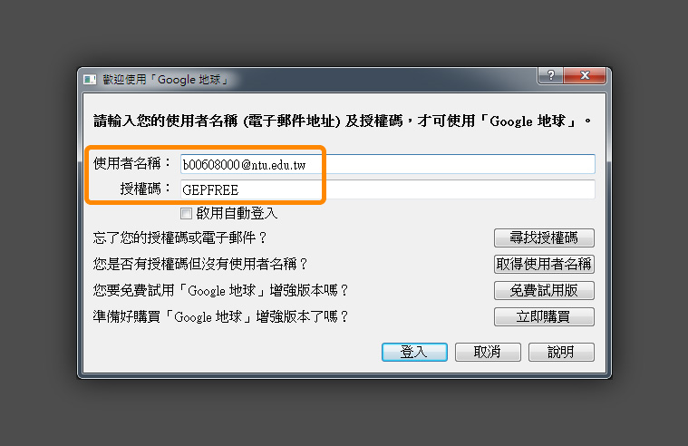
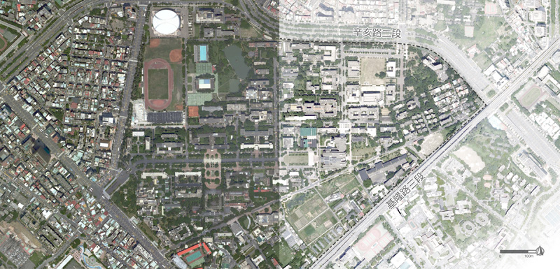

背景底圖
底圖用在哪裡?
底圖在分析圖時用來顯示基地及周邊的散佈狀態、而在設計平面圖時用以提供周遭資訊。雖然不會是圖面的主要資訊，但少了底圖，我們會很難掌握主要資訊的意義。因此底圖要可以被看到，卻又不太過搶眼。通常會用空照圖或Google街道圖加工來製作底圖
獲得高解析度空照圖
雖然可以透過列印GoogleMap的網頁成PDF來取得無標籤的空照圖，但是其解析度與範圍有限。雖然比較麻煩一點，但可以透過 Google Earth Pro 來取得高解析度且大範圍的空照圖。下載並安裝之後，只要在登入視窗輸入信箱與GEPFREE之後就可以啟用。

Google Earth Pro登入所需資訊
先將左下角的圖層全部取消勾選，並將「工具>選項>導覽」導覽的選項改成縮放時不要自動傾斜，移動到基地位置，就可以開始到「檔案>儲存>儲存圖片」，設定出圖選項了。也可以先到「檢視>歷史圖像」看看有沒有更好品質的空照圖，還有調調指北的方向，再按一次即可回復正北方向。在地圖選項可以選擇是否輸出圖例等標籤，其中請記得一定要輸出比例尺跟指北，把解析度改成Maximum，就可以儲存高解析度空照圖了。

空照圖加工
由於空照圖會有很多的色彩以及高對比，造成資訊上的干擾，所以通常會淡化一下周遭，並圈出基地範圍。可以利用PS的調整透明度、色相飽和度、亮度、曲線等方法淡化空照圖，再去用以拉加上路名、基地範圍線、比例尺與指北。這樣基本上就是一張底圖了。

空照原圖 / 底圖加工
本篇PS的要素就只有一句話而已，不要懷疑。